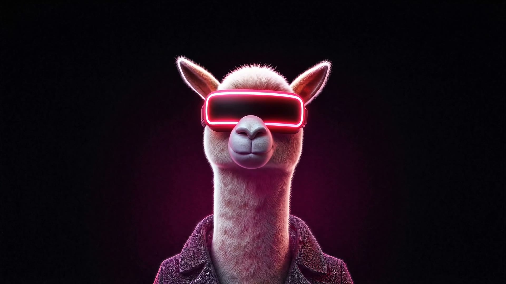
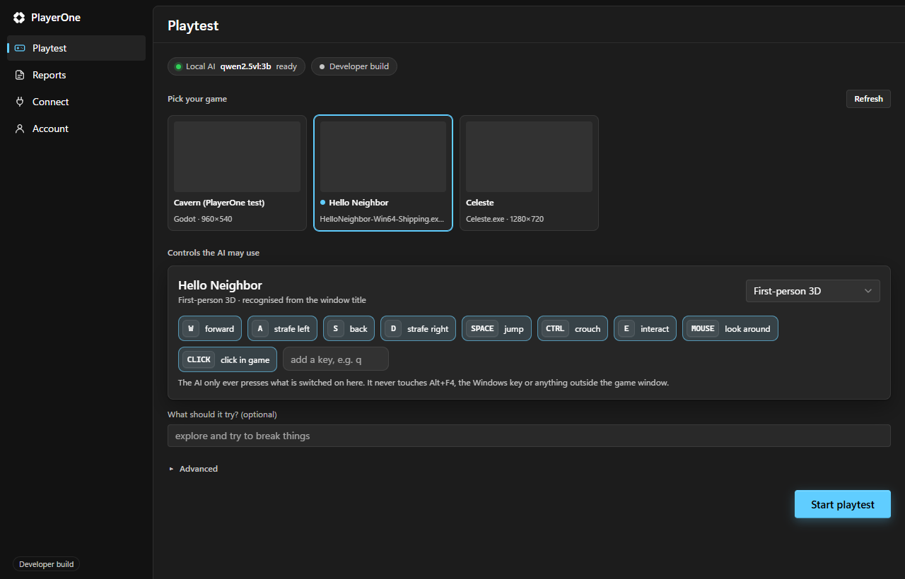

PlayerOne
An AI playtester. It plays your game, catches the bug, and files the report with proof.
A free local AI does the playing. A big AI only does the judging.
github.com/nijathatamli/AI-hakaton

Small studios ship bugs because nobody has time to replay the game
Indie teams of 1 to 15 people build PC games in Godot, Unity and Unreal with no QA team. The first bug report is often a one-star review with no steps to reproduce.
A bug report after every build: error, stack trace, repro steps, the frames before it, and a clip.
Manual testing
Slow and repetitive. Nobody replays level 3 for the hundredth time after every build.
Hiring QA
Too expensive for a small team, and still slow to turn around.
A big AI playing
Reads a full screenshot every move: 67,000 to 85,000 tokens per minute of play.
Split the brain. Cheap hands, smart judge.
Play
free, on your PCA local vision AI or our free bot plays the game with real keys and mouse. Any engine, no SDK.
Watch
exact, zero tokensReads the engine console, catches crashes, hangs and soft-locks, keeps the last 12 seconds.
Judge
your AI, tiny digestsClaude, Codex or Gemini read a 45 KB summary, decide what is a real bug and write the ticket.
Pick a game. It knows how to play.
PlayerOne recognises the game, suggests the controls, and you approve exactly what the AI may press. It never touches Alt+F4 or anything outside the game. F8 stops it anywhere.
released, with installers
targets: Windows x64, x86, ARM64, macOS, Linux
Claude Code, Codex or Gemini CLI can direct it

The desktop app: pick a window, approve controls, press Start.
What the AI actually does, and what it does not
Plays from pixels
A vision model reads each frame and picks keys, mouse look and clicks from the approved controls. Stuck? It turns away and tries something else.
Works out the controls
Recognises the game by name or from the screen and picks a layout: first-person, platformer, top-down.
Judges with evidence
The big AI gets console errors and a contact sheet of the seconds before each incident, decides if it is a bug, and steers the player.
Detection is rules, on purpose
Crash, hang, console error and soft-lock checks need no model. That is why the clean build had 0 false alarms.
Proof, not "it broke somewhere"
Error and stack trace
res://main.gd:154
Repro steps
the recorded inputs that led there
Contact sheet and clip
36 KB picture, 14 KB 480p clip

Contact sheet: the 9 frames before the crash.
We broke our own game on purpose
Five planted bugs plus a clean build. One minute of real play each, three players, 18 runs. Every log, frame and clip is in the repo.
| Bug | Random keys | Free bot | Local AI 3B |
|---|---|---|---|
| Soft-lock | 34 s | 15 s | 39 s |
| Script error | missed | 12.5 s | missed |
| Crash | missed | 18 s | missed |
| Freeze | missed | 20 s | missed |
| Coin counter | missed | missed | missed |
| False alarms | 0 | 0 | 0 |
What broke, and what we did
- PlayerOne froze with a frozen game. Capture now has a 1.5 s deadline.
- 13 false alarms. It now tries every control before calling it stuck. Down to 0.
- 8 unit tests now cover the console classifier and the token meter.
The same minute of testing, 96% fewer tokens
tokens a big AI spends playing one minute itself
tokens it spent judging that minute through PlayerOne
to catch a crash, a hang or a script error, report already written
Token counts from the meter in each session.json. Dollar figures at Claude Sonnet 5.5 input price, $2 per million tokens.
What PlayerOne still gets wrong
The coin counter bug
No error, no stall. Only a model that understands the screen can see it. The 3B model did not.
The local AI is slow
25 to 45 moves a minute against 77 for the bot. The bot is the better driver; the AI is better at judging.
A weak judge writes weak reports
The 3B judge wrote "press a key". PlayerOne now falls back to the recorded inputs.
Small sample
One run per bug, on bugs we planted ourselves. Next: real third-party games.
Runs today, on hardware people already own
None. No training data and no game source code. It works from the screen and the engine console.
Free on the user's PC. With a cloud judge, about $0.36 per hour of play instead of $8.40.
Accounts, plans and usage metering on Supabase. Stripe webhook. Installers for 5 targets.
Who pays
Local AI, crash and console capture. Costs us nothing to serve.
Monthly. Their own Claude, Codex or Gemini key judges.
Per seat. Shared reports, a playtest in CI after every build.
Our hosted judge, priced on the tokens we meter.
No SDK. No engine plugin. Any game on screen.
Other AI testing tools need engine integration and run the expensive model on every frame. PlayerOne attaches to any window, trusts the engine console first, and only sends the big model a compressed digest.
Try it
roaring-alfajores-8a941a.netlify.app
Download, pick your game, press Start.
Pilot with three Baku indie studios on their real games. Measure bugs found per build.
Then: Unity and Unreal log probes on real projects, and signed builds.